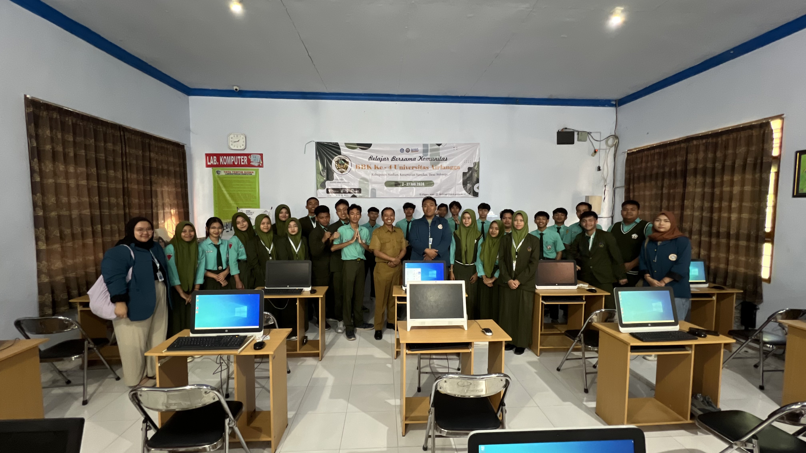

Inspiring the Next Generation: Robotics Seminar for High School Students
Making Robotics Accessible, Engaging, and Future-Focused 🤖

Robotics is no longer just a futuristic concept—it’s already part of everyday life, from industrial automation to smart devices. This seminar was designed to introduce robotics to high school students in a way that is engaging, relatable, and inspiring.
The goal was not only to teach basic concepts, but also to spark curiosity and encourage students to explore opportunities in STEM—especially in robotics and automation.
🎓 Making Robotics Accessible and Exciting
The seminar simplified complex robotics concepts into clear and understandable topics:
- What is a Robot? → Understanding basic systems
- Sensors & Actuators → How robots sense and act
- Control Systems → How robots “think” and make decisions
- Real-World Applications → From factories to daily life
The focus was on making robotics easy to understand while keeping it meaningful and relevant.
🧠 Bridging Theory and Real Life
Instead of focusing only on theory, the session connected robotics concepts to real-world applications:
- Practical examples students can relate to
- Applications in industry and everyday technology
- The growing importance of robotics in future careers
This approach helped students see robotics as something achievable—not abstract.
🛠️ My Role in the Seminar
I handled both the preparation and delivery of the seminar, ensuring it was engaging, clear, and impactful.
📊 Presentation Design
Designed presentation materials tailored for high school students, using clear visuals and structured content.
🎤 Main Presenter
Delivered the seminar, explaining concepts interactively and maintaining audience engagement.
💡 Concept Explanation
Simplified technical ideas using analogies and real-life examples to enhance understanding.
💬 Discussion & Q&A
Facilitated interactive discussion, answered questions, and encouraged student participation.
🚀 Why This Matters
- ✅ Increases awareness of STEM and robotics
- ✅ Encourages students to explore engineering fields
- ✅ Builds early interest in technology careers
- ✅ Makes complex topics accessible and engaging
🌟 Final Thoughts
This project highlights that engineering is not only about building systems—it’s also about sharing knowledge and inspiring others. Introducing robotics to students opens doors to future opportunities and helps shape the next generation of innovators.
Because sometimes, the most impactful engineering work isn’t what you build… it’s who you inspire to build next.